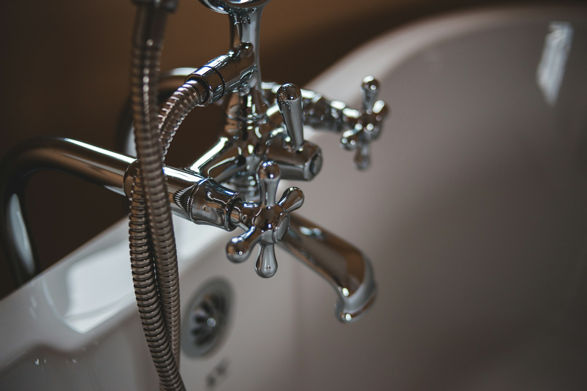

Emergency repairs
Leaks, burst pipes, blocked drains and urgent water issues assessed quickly and responsibly.
Describe the issue →
RESIDENTIAL PLUMBING · GTA
Responsive plumbing repairs, installations and maintenance with clear communication from the first call.
PLUMBING SERVICES
From a dripping tap to a full renovation rough-in, the right diagnosis comes before the right fix.
Leaks, burst pipes, blocked drains and urgent water issues assessed quickly and responsibly.
Describe the issue →
Kitchen, bath and laundry installations planned to work beautifully with your space.
Plan an installation →
Water heaters, filtration, sump pumps and preventative maintenance for peace of mind.
Book a consultation →HOW IT WORKS
Designed for homeowners who want to know what’s happening and why.
We understand the symptoms, timing and priorities before we touch a tool.
A focused assessment identifies the cause—not just the visible drip.
You receive practical options, scope and pricing before work begins.
Professional work, tidy handoff and a simple record of what was completed.
REQUEST SERVICE
Share the issue and we’ll prepare a service request. Demo only—no information is transmitted.
Urgent flooding?
Shut off your main water valve and contact emergency services or a qualified plumber.